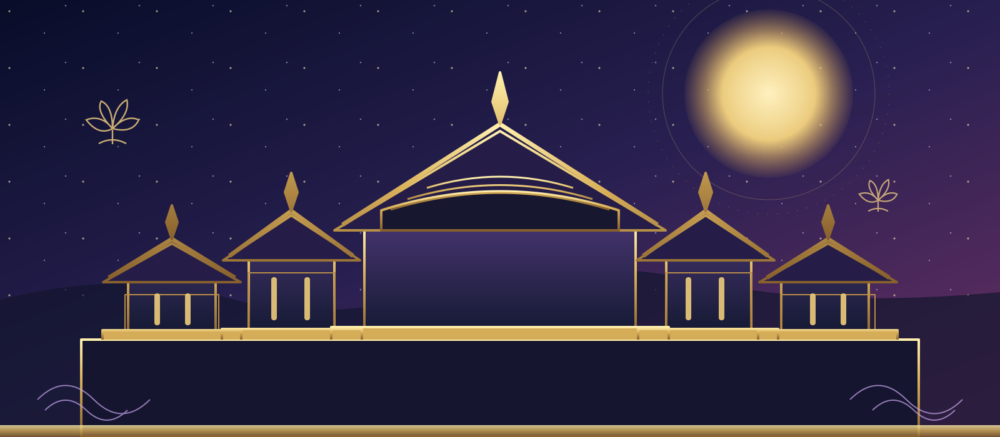
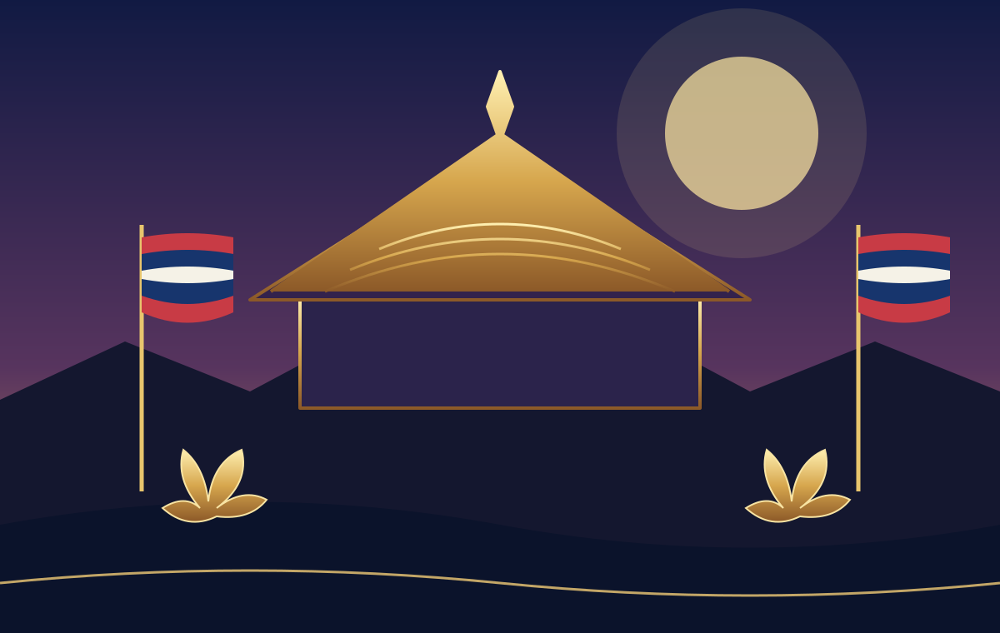
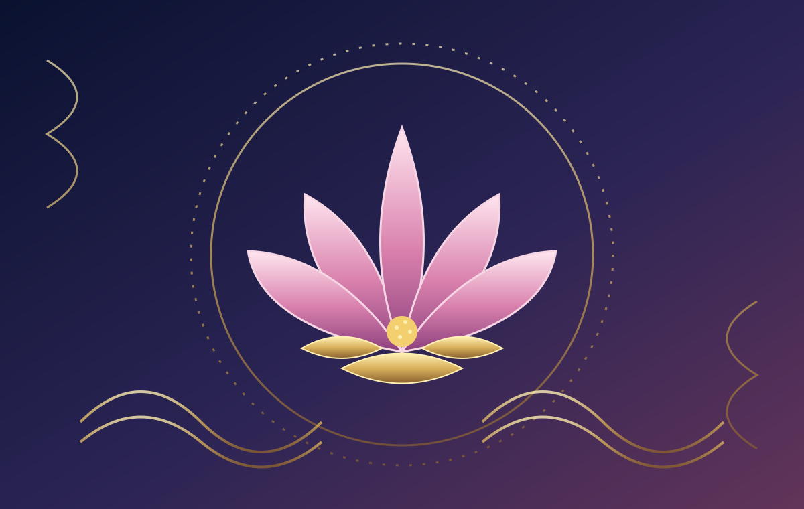

Cambodian Culture & National Calendar
Coronation Day of King Norodom Sihamoni
Why Cambodia commemorates October 29, the history of the 2004 coronation, and the meaning of this national day
Every year on October 29, Cambodia observes Coronation Day in honor of King Norodom Sihamoni's formal coronation in 2004. In 2026, the date falls on Thursday and marks 22 years since the ceremony. It is listed as a public holiday in Cambodia's official 2026 calendar.
What Is Coronation Day?
Coronation Day is the annual Cambodian observance marking the day King Norodom Sihamoni formally became king. The date is October 29, 2004. The day is more than an anniversary on the calendar: it connects a modern constitutional monarchy with Cambodia's long royal history, public ceremonies, and traditions of respect for the royal institution.
The holiday is separate from the King's birthday, which is May 14. The distinction matters when reading Cambodian holiday lists: the birthday celebrates the King's birth, while Coronation Day remembers the formal beginning of his reign.
A Short Timeline: 2004 to Today
The Council of the Throne selected Norodom Sihamoni as the next king after King-Father Norodom Sihanouk abdicated.
The formal coronation took place, establishing the date now commemorated annually as Coronation Day.
Cambodia marked the 20th anniversary. The official program that year included religious and blessing ceremonies at the Royal Palace and a public gathering; the schedule for each anniversary can differ.
The 22nd anniversary falls on a Thursday. The official 2026 public-holiday calendar lists the date as Coronation Day.
Calendar note: October 29 is a fixed Gregorian date. This is different from festivals such as Pchum Ben and the Water Festival, whose dates are tied to the Khmer lunar calendar and move on the Gregorian calendar.
Why the Day Matters in Cambodia
Cambodia's monarchy is part of the country's constitutional and cultural history. Coronation Day gives public institutions and communities a yearly moment to acknowledge the continuity of the royal institution and the King's role as head of state. The observance is also a reminder of how national ceremonies bring together state protocol, religious traditions, and public expressions of respect.
The meaning of a national day can be both formal and personal. For some people, it is an occasion to follow official ceremonies or send good wishes. For others, it is a day off that invites time with family or reflection on Cambodian history and identity. People may observe it differently, and the article does not assume that every household marks the date in the same way.


How Is Coronation Day Commemorated?
Activities depend on the year and the official program. Recent anniversary coverage has described royal greetings, announcements on national television and radio, and observances organized by municipal and provincial administrations. The 20th-anniversary program in 2024 included religious and blessing ceremonies at the Royal Palace and a public gathering in Phnom Penh. Those details describe that year's celebration; they should not be taken as a guaranteed schedule for 2026.
For current arrangements, visitors should check announcements from the Royal Palace, Cambodian government agencies, and trusted Cambodian news services. Public holiday status does not mean every attraction or public service follows the same hours.
Coronation Day vs. the King's Birthday
| Observance | Date | What it marks |
|---|---|---|
| King's Birthday | May 14 | The birthday of King Norodom Sihamoni. |
| Coronation Day | October 29 | The formal coronation in 2004 and the beginning of his reign. |
Is October 29 a Public Holiday in 2026?
Yes. Cambodia's published 2026 holiday calendar lists Thursday, October 29 as Coronation Day of King Norodom Sihamoni. If you need to plan work, travel, school, or government-office visits, check with the specific organization for opening hours and any updated announcement.
Frequently Asked Questions
When is Coronation Day in Cambodia?
It is observed every year on October 29, the date of the King's formal coronation in 2004.
Is Coronation Day a public holiday?
Yes. It appears on Cambodia's official 2026 public-holiday calendar. Individual business and service hours can still vary.
When was King Norodom Sihamoni selected and crowned?
The Council of the Throne selected him on October 14, 2004, following the abdication of King-Father Norodom Sihanouk. The formal coronation took place on October 29, 2004.
Is Coronation Day the same as the King's birthday?
No. The King's birthday is May 14; Coronation Day is October 29.
Does the date change from year to year?
No. Coronation Day is observed on October 29 each year. It is not a lunar-calendar festival.
Will there be a public ceremony or fireworks in 2026?
The specific 2026 program should be confirmed through official announcements. Past anniversary activities do not guarantee the same events each year.
Sources and Further Reading
This article separates fixed calendar information from details of individual anniversary programs. Dates and descriptions were checked against public institutional sources listed below.
- Legal and Legislative Research Center of Cambodia — Annual Holiday Calendar 2026 (lists October 29 as Coronation Day).
- Cambodia Ministry of Information — 20th anniversary of the King's coronation (October 2024; selection and coronation history and that year's observances).
- National Radio of Cambodia — background on the King and the 2004 succession.
- Official website of His Majesty King Norodom Sihamoni.